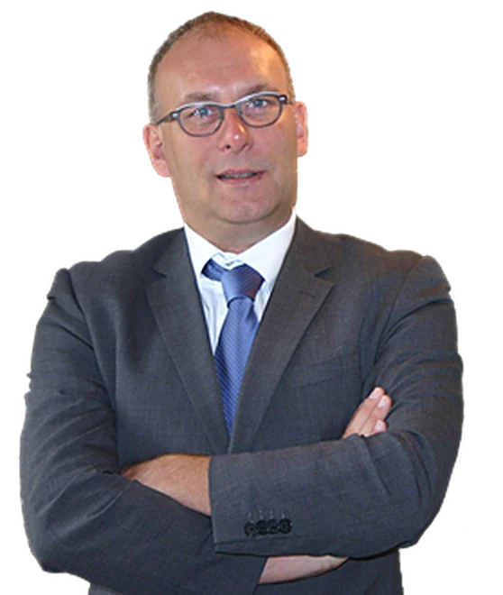
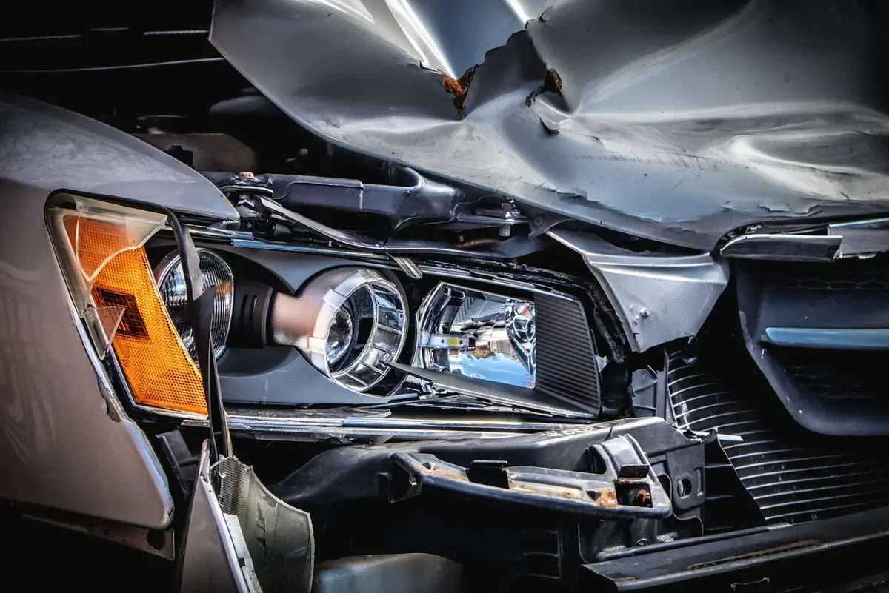
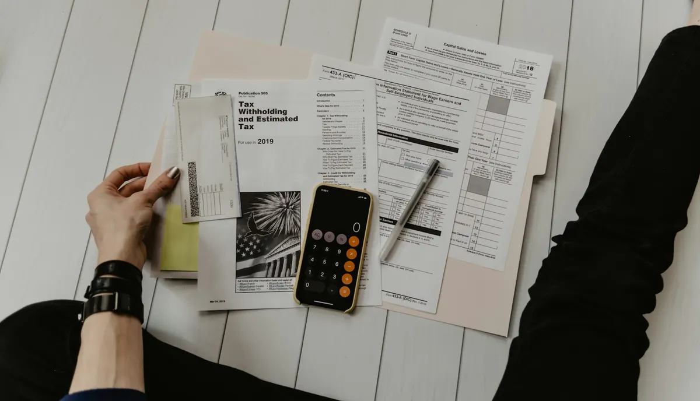
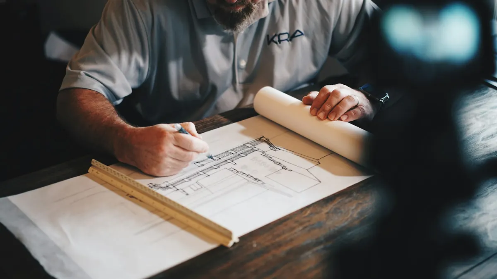
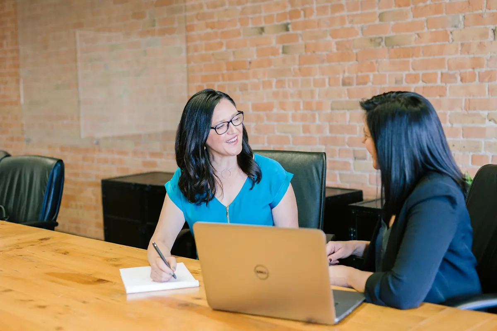
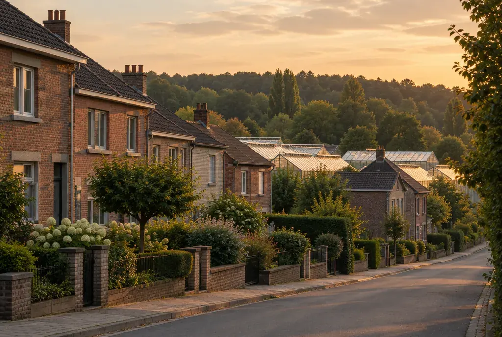

Een advocaat die u zelf ontvangt, en uw zaak zelf pleit.
Meester Luc De Wilder ontvangt u op kantoor in de Camille Françoisstraat. Een ongeval, een strafzaak, een scheiding, een huurder die niet betaalt of een aannemer die niet levert: u legt het één keer uit, aan wie uw dossier ook echt opvolgt.

Waarvoor u bij ons terechtkunt
Meester De Wilder ziet zichzelf vooral als raadsman. Klik op uw onderwerp, dan staat het al klaar in het contactformulier.

Verkeer en politierechtbank
Alcoholintoxicatie en alcoholslot, vluchtmisdrijf, niet-verzekering, ongevallen met gewonden. Ook voor slachtoffers die hun schade willen terugkrijgen.
Vraag een afspraakStrafrecht
Verdediging voor de correctionele rechtbank en in beroep. Of burgerlijke partijstelling als u zelf slachtoffer bent.
Vraag een afspraakFamilie en jeugd
Echtelijke moeilijkheden voor gehuwden en samenwonenden, erkenning of betwisting van vaderschap, en jeugdrecht.
Vraag een afspraak
Zelfstandigen en kmo's
Contracten opstellen, onbetaalde facturen invorderen, bijstand bij faillissement. Meester De Wilder komt zelf uit een familie van ondernemers.
Vraag een afspraak
Huur, buren en aannemers
Woninghuur en handelshuur, een gemene muur of een haag, slecht uitgevoerd werk en gerechtelijke expertises.
Vraag een afspraakErfenis en bewindvoering
Vereffening en verdeling van een erfenis. En jarenlange ervaring als bewindvoerder, aangesteld door de vrederechter.
Vraag een afspraakBijstand in politieke dossiers
Meester De Wilder zat 18 jaar in de gemeenteraad van Machelen, waarvan een deel als fractieleider. Hij kent de politieke wereld van binnenuit. Ook gemeenten kunnen bij hem terecht met hun courante juridische vragen.

De cliënt wordt ontvangen door meester De Wilder zelf.
Zo werkt het kantoor sinds 1988Bewust in Machelen, niet in de stad.
Luc De Wilder studeerde in 1988 met onderscheiding af als licentiaat in de rechten aan de VUB. In september van dat jaar schreef hij zich in aan de Brusselse balie. Zijn stage deed hij bij wijlen meester Jaak Verbaanderd in Grimbergen, een ervaren pleiter van wie hij de knepen van het vak leerde.
Hij koos er altijd voor om zijn kantoor in Machelen te houden, vlak bij Vilvoorde en Brussel. Vlot bereikbaar, zonder het drukke stadsverkeer.
- 1988Licentiaat rechten aan de VUB en start aan de Brusselse balie
- VrederechterPlaatsvervangend vrederechter in het kanton Vilvoorde
- Gemeente18 jaar gemeenteraadslid in Machelen, ook als fractieleider
- VIMA12 jaar lid van de politieraad van de zone Vilvoorde-Machelen
Klein genoeg om u bij naam te kennen.
Meester De Wilder staat in voor alle contacten met cliënten. Hij wordt bijgestaan door zijn echtgenote en door medewerkers die zijn instructies volgen.
Luc De Wilder
Advocaat, dominus litisOntvangt u zelf, behandelt uw dossier en pleit voor rechtbanken over heel het land.
Anja Ullrick
Onthaal en opvolgingJuriste, licentiaat rechten aan de VUB sinds 1994 en tot 2001 zelf advocaat. Ze zorgt voor het onthaal, de opvolging van de dossiers en de boekhouding.
Misschien betaalt uw verzekering.
Voor de meeste verkeerszaken hebt u een verzekering rechtsbijstand. Dan draagt de verzekeraar de kosten en erelonen, en kiest u zelf uw advocaat. Beantwoord twee vragen en u weet wat u nu best doet.
Zo verloopt een eerste gesprek
U belt het kantoor
Een raadpleging gebeurt na telefonische afspraak. Aan de telefoon zoeken we samen een moment dat u past.
U brengt uw stukken
Of u stuurt ze vooraf op, per post naar het kantoor of per mail. Dan is uw dossier al gelezen als u binnenkomt.
Duidelijke afspraken
Bij de start van uw dossier spreken we af hoe het ereloon berekend wordt. Zo weet u waar u aan toe bent.
Hoe ziet uw rekening eruit?
Het is belangrijk dat u weet hoe de kostenstaat van uw advocaat in elkaar zit. Die bestaat gebruikelijk uit drie delen, met de btw erbovenop.
Kosten voor derden
Vooral de rolrechten van de griffie en de kosten van een gerechtsdeurwaarder. Die legt de rechtbank op het einde meestal ten laste van de partij die verliest.
Het ereloon
Meestal een uurloon voor de tijd die aan uw zaak besteed wordt. Voor eenvoudige zaken voor de politierechtbank kan een vast bedrag. We spreken het af bij de start.
Kantoorkosten
Het openen van een dossier, brieven, procedurestukken, kopies en verplaatsingen. Ze staan apart en duidelijk op de staat.
Btw en provisies
Sinds 2014 zijn advocaten btw-plichtig, dus komt er 21% bij. Loopt een zaak lang, dan wordt een provisie gevraagd zodat u op het einde niet alles in één keer moet betalen.

Vlot bereikbaar, zonder stadsverkeer.
Machelen ligt tussen Vilvoorde en Brussel. U parkeert gewoon voor de deur, en wie met de bus komt, stapt af aan de kerk van Machelen.
- Voldoende parkeerplaats voor het kantoor
- Bushalte aan de kerk, het kantoor ligt op loopafstand
- Raadpleging na telefonische afspraak
Wat mensen ons vaak vragen
Staat uw vraag er niet bij? Bel het kantoor op 02 253 24 06.
Moet ik een afspraak maken?
Ja. Een raadpleging gebeurt na telefonische afspraak. Bel 02 253 24 06, dan zoeken we samen een moment dat past.
Kan ik mijn stukken ook opsturen?
Dat kan, per post naar het kantoor in de Camille Françoisstraat 9 of per mail naar kantoor@advocaatdewilder.be.
Pleit meester De Wilder ook buiten Vilvoorde?
Ja. Hij kan als advocaat pleiten voor rechtbanken over heel het land, in eerste aanleg en in beroep.
Ik ben burgemeester, schepen of raadslid. Kan ik terecht?
Ja. Meester De Wilder zat zelf 18 jaar in de gemeenteraad van Machelen en kent de politieke wereld. Ook gemeenten kunnen met hun juridische vragen bij hem terecht.
Wat als ik niet akkoord ben met de rekening?
Dan zitten we eerst samen om het op te lossen. Lukt dat niet, dan kan u een beroep doen op de stafhouder van de Nederlandse Orde van Advocaten bij de balie van Brussel.
Staat mijn zaak er niet bij?
De lijst is niet volledig. Twijfelt u of uw dossier bij het kantoor past, bel dan gerust even. U krijgt meteen een eerlijk antwoord.
Bel of schrijf het kantoor.
Het snelst gaat het met een telefoontje. Wil u liever eerst kort uitleggen wat er speelt, dan kan dat via het formulier.